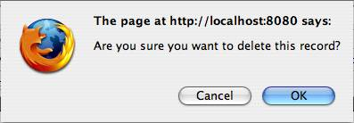

In the Scientists page (see Figure 4.1-2), click on the Delete
button  , for the user you wish to remove,
found in the Actions column on the left-end side of the
page.
, for the user you wish to remove,
found in the Actions column on the left-end side of the
page.
An alert window is brought up on screen for confirm his action (see Figure 4.5-1)
|  |
| Figure 4.5-1: Alert window |